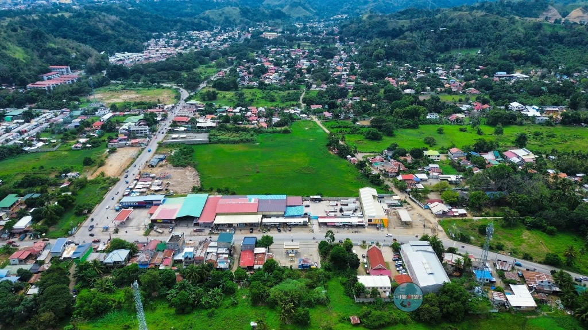

A progressive community in the heart of Cagayan de Oro City — where tradition meets development, and every resident is part of one family.
Barangay Canitoan is one of the fastest-growing barangays in Cagayan de Oro City, Misamis Oriental. Located approximately six (6) kilometers from the city's commercial center, it has evolved from a predominantly agricultural community into a thriving urban barangay with residential subdivisions, relocation communities, commercial establishments, schools, and government facilities.
The Barangay Government is committed to providing efficient, transparent, and people-centered public service while promoting sustainable development, peace and order, and community participation.
| City | Cagayan de Oro |
| Province | Misamis Oriental |
| Classification | Urban Barangay |
| Number of Zones | 10 Zones |
| Population | Approximately 38,263 |
| Total Land Area | 12,348,563 m² |
| Distance from City Proper | About 6 km (15–20 mins) |
Navigate through the key sections of our official barangay website.
Come experience our warm community and beautiful surroundings.